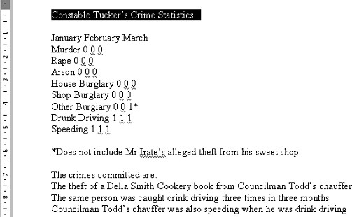
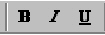
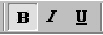
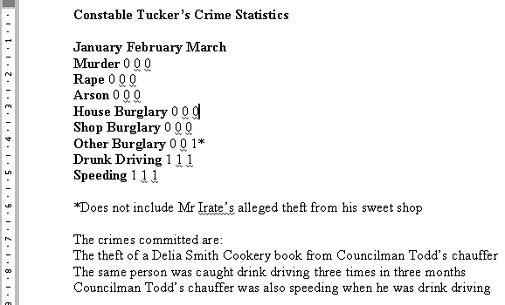

Free
computer Tutorials
|
Free
computer Tutorials
|
|
 home home |
|
||||
Bold Text in Microsoft WordTo make any part of your text bold in Microsoft Word, you have to highlight the text. So using one of the highlight techniques you learnt in the previous section, highlight the first line of the report. In other words, highlight the words "Constable Tucker's Crime Statistics". Your page should like this one:  Incidentally, if you haven't got the ruler bar showing, click on View from the Microsoft Word menu bar. Then click Ruler. But we're going to make bold the text we highlighted. There are two very easy ways to make your highlighted text bold. The first is by clicking the "B" icon on the toolbar. It looks like this:  With your text highlighted, click the "B" icon. Your text will turn bold. You might not be able to tell because your text will still be highlighted. Click anywhere on your blank page to get rid of the black highlight. The "B" icon will change to this:  That indicates that you have Bold text switched on. To turn off Bold text, highlight the text and then click the B icon with the left mouse button.
Use KeyboardAnother easy way to make your text bold in Microsoft Word is with the keyboard. To make text bold by using the keyboard, do the following
When you have successfully changed the first line of the report to bold text, change the crimes themselves so that they are all bold. Change the Months of the year to bold text, too. When you're done, your document will look like this:  As you can see, there is a distinct difference between the bold text and the normal text. We'll now use italics and underlining. Click here to move on to Italics and Underlining --> |
|||||
|